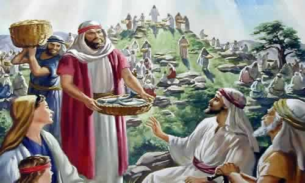
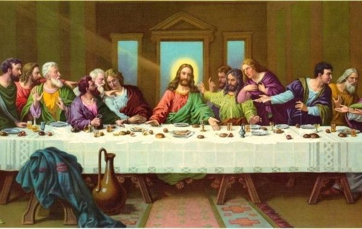
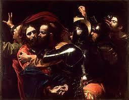

GRANDEZA DE UM AMOR
MÃE HUMILDE
MARIA DE NAZAR, NOSSA SENHORA, sempre foi uma mulher tranquila que gostava de pensar e olhar as belezas do Céu, apreciando as maravilhas do firmamento, imaginando a grandeza de NOSSO DEUS e SENHOR, que abraa os seus filhos com carinho e ternura, e derrama bnos e infinitas graças sobre a humanidade de todas as geraes, demonstrando um amor imenso e ilimitado por SUA criao. noite olhando o Céu repleto de estrelas brilhantes, seu olhar brilhava de emoùo. Não que sua curiosidade quisesse desvendar os mistérios da vida. Não, não era isso. Na sua simplicidade e na grandeza de seu amor, ELA buscava um meio, um jeitinho mais especial para também agradar o CRIADOR, por tanto carinho e tanta bondade que ELE derrama sobre nós, sobre toda a humanidade. Até que um dia aconteceu a visita do Arcanjo Gabriel, e ELA admirou-se com a presena do Anjo, e ficou ainda mais admirada ao saber que tinha sido escolhida para a MÃE do FILHO DE DEUS! Na sua preciosa simplicidade, repleta de agradecimentos e com o coração transbordando de felicidade, nem conseguia articular as melhores e mais atenciosas palavras de gratidáo ao DEUS DA VIDA! E ento, timidamente, apenas disse ao emissório Divino: Eu sou a Serva do SENHOR, faa-se em Mim segundo a Santíssima Vontade do SENHOR DEUSó. (Lc 1, 38)
Com o nascimento de JESUS, a ternura de SEU Coração derramou-se torrencialmente sobre o MENINO DEUS, propiciando-LHE em cada dia, os melhores e mais confortveis cuidados para alegria e bem-estar DELE. Sempre carinhosa, NOSSA SENHORA acompanhava o desenvolvimento da criana, os SEUS modos particulares, o sorriso que moldurava os SEUS pequeninos làbios e o jeitinho carinhoso de seu olhar. JESUS crescia forte, bonito, inteligente e alegre, fazendo acontecer no quotidiano, momentos descontrados de uma felicidade incomparvel, que NOSSA SENHORA sempre guardou no coração.
AMOROSA MISSóO REDENTORA

Mas JESUS o FILHO DE DEUS, sabia que aqueles fatos iam acontecer, e por isso mesmo, manteve-se concentrado na SUA Missão Redentora. Foram muitos os milagres realizados por NOSSO SENHOR, que provavam as SUAS verdades e a grandeza de SEU Amor sem medidas, por toda humanidade. Nas Sagradas Escrituras estáo registradas, muito das coisas maravilhosas que ELE fez. Aqui vamos citar apenas duas passagens, uma acontecida nas Bodas de Cana da Galileia que João Evangelista menciona no seu Evangelho de JESUS, descrevendo que tendo acabado o vinho da festa de casamento, JESUS mandou encher com água dois grandes depésitos e transformou a água num vinho especial que foi servido aos convidados e todos ficaram felizes com aquele saboroso vinho. (Jo 2, 2-11). Também por duas vezes JESUS fez a Multiplicao de Pées para saciar a fome da multidáo que O seguia para ouvi-LO e suplicar as SUAS Graças. (Jo 6, 1-13), (Mt 14,16-21), (MT 15, 32-38). Os quatro Evangelistas descrevem os mesmo fatos mencionados e muitos outros. Na multiplicao dos pées, NOSSO SENHOR com o fato de saciar uma multidáo de pessoas famintas fisicamente, faz uma concreta alusão ao SACRAMENTO DA EUCARISTIA, prefigurando na mente da humanidade a SAGRADA EUCARISTIA, que o SEU Corpo, Sangue, Alma e Divindade que ELE ia deixar para a vida do mundo. NOSSA SENHORA, SUA SANTSSIMA MÃE, observava atenciosa todas as aes de Seu Querido e Amado FILHO, e visivelmente percebia a realidade inquestionvel, que ELE era verdadeiramente o Péo da Vida.
INSTITUIU A SAGRADA
EUCARISTIA 
No momento supremo e decisivo da SUA existncia terrestre, durante a Éltima Ceia em companhia dos Apóstolos em Jerusalàm, ELE instituiu a SAGRADA EUCARISTIA, afirmando sobre a Presena Real DELE, de Seu Corpo, Sangue, Alma e Divindade, no Péo e no Vinho Consagrado. Foi o melhor e mais autntico meio que JESUS escolheu para deixar a SUA Presena Viva e REAL no mundo para toda a humanidade. E todos os Discípulos respeitosamente acreditaram.
Desse modo, a Éltima Ceia foi a Primeira Santa Missa da história, e uma Santa Missa especial, porque presidida pelo prprio CRISTO REDENTOR da Humanidade.
A SANTSSIMA VIRGEM MARIA, emocionada, acompanhava cheia de zelo, todos os atos de Seu Querido e Amado FILHO.
TRAIO, CONDENAO E MORTE

Sofreu uma brbara e covarde flagelao, transportou a SUA Cruz até o Calvrio, onde foi crucificado e derramou o SEU Precioso e Sagrado Sangue sobre a humanidade de todas as geraes, neutralizando o efeito do pecado original e dos pecados subseqentes cometidos pela humanidade, consolando assim o DIVINO PAI ETERNO.
Pregado no madeiro, nos derradeiros momentos da SUA existncia, ELE vendo SUA Mãe Santíssima aos pés da SUA Cruz, ao lado de João o Apóstolo que ele amava, pela prpria Vontade deixou a SUA MÃE para ser a MÃE ESPIRITUAL de toda humanidade. Enfim JESUS morreu, foi sepultado e Ressuscitou no terceiro dia, conforme as Escrituras. Deu suas Éltimas recomendaes aos Apóstolos e voltou aos Céus.